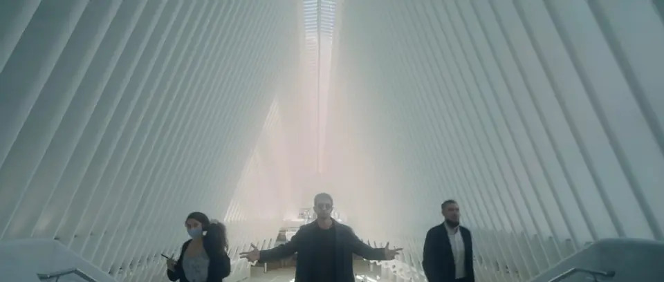

Page III
The Stories We Believe Together

Reality is story-shaped.
Money. Markets. Institutions. Civilizations.
The structures we experience as reality are shaped by the meanings and agreements we share.
The world we inherited was built by people who believed in a story strongly enough to organize their lives around it.
And what was written can be rewritten.